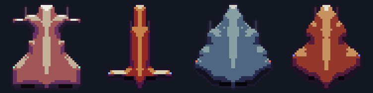
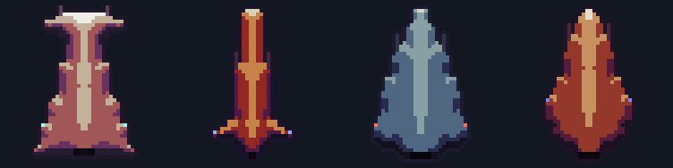
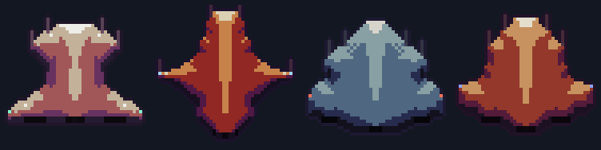
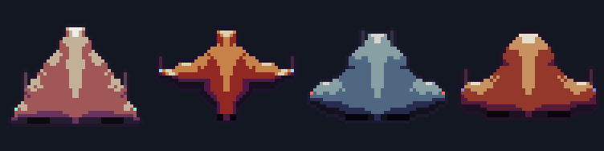
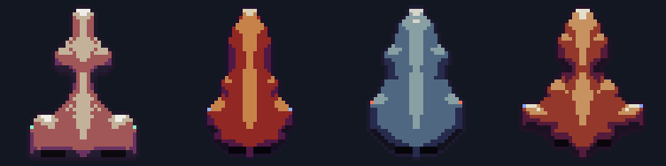
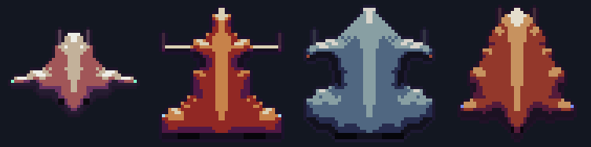
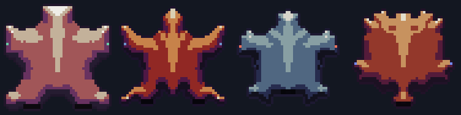

Seven families, the same four seeds in every row. Each one is a different corner of the same 33 knobs.
Raider
Narrow hull, broad swept wings

Interceptor
Long and thin, small fins

Dreadnought
Wide, heavy, blunt nose

Manta
Low delta, almost all wing

Hive
Organic, lumpy, waisted

Shard
Angular, pierced, spiky

Radial
N-fold symmetry, not bilateral
